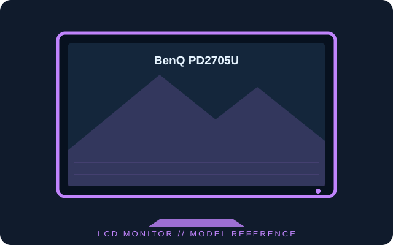

[ INDIVIDUAL COMPONENT // DISPLAYS ]
BenQ PD2705U
27-inch 4K IPS design monitor with factory color modes, USB-C 65 W power delivery and KVM-related workflow features.

IDENTIFICATION: Confirm the complete model and regional suffix on the rear label. Published figures describe the cited family/configuration; the exact manual and unit label take precedence where revisions differ.
Specifications
| Catalog subcategory | LCD displays |
|---|---|
| Exact product / family | BenQ PD2705U |
| Panel and native resolution | 27-inch IPS LCD, 3840 × 2160 (16:9) |
| Native timing | Up to 60 Hz at native resolution |
| Luminance / contrast | 250 cd/m² typical; 1200:1 typical |
| Inputs / companion ports | DisplayPort 1.4, HDMI 2.0 × 2, USB-C with DisplayPort Alt Mode and up to 65 W delivery, USB-A hub, USB-B upstream and headphone out |
| Stand / VESA mounting | Height, tilt, swivel and pivot adjustments; 100 × 100 mm VESA mount |
Power and compatibility notes
Typical power consumption is about 27 W (mode and connected USB loads affect actual draw). USB-C video requires a compatible host; the 65 W limit may be insufficient for some mobile workstations. Confirm exact regional bundle and manual before servicing.
Preservation notes
Record the complete rear-label model, serial/date code, supplied stand and accessories, tested input, host graphics output, cable, selected timing and image condition. Preserve the matching regional manual and calibration profile with the unit; use qualified service procedures for internal work.
Manufacturer documentation and sources
- BenQ — PD2705U product specificationsManufacturer specifications and model features.
- BenQ — PD2705U downloads and manualOfficial product support and downloadable user documentation.